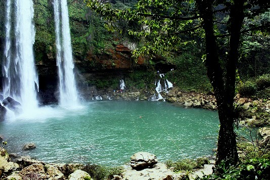
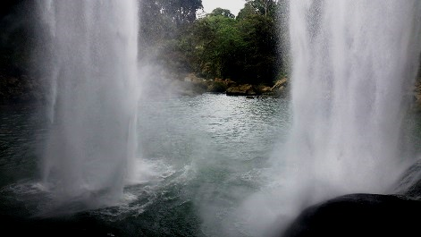
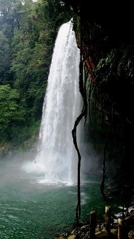
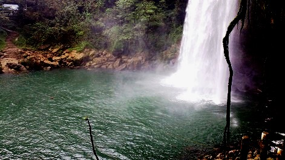
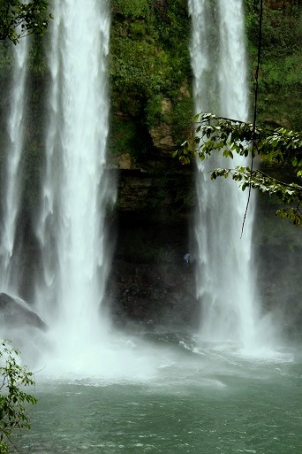
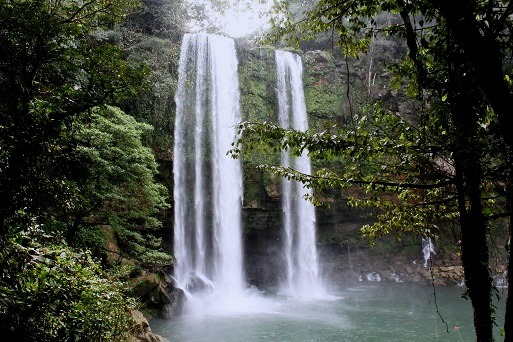

Como resultado de la precipitación de un río por un cantil de rocas calcáreas, se encuentra esta hermosa cascada de aproximadamente 30 metros de altura, que al caer, forma una amplia poza en la que es posible, con precaución, practicar la natación. Este refrescante y hermoso paraje, se encuentra en un típico ejemplo de la selva tropical alta de la sierra chiapaneca, y en medio de una rica vegetación compuesta por altos ejemplares de caobas, chicozapotes y palos de agua. El lugar funciona como parque turístico ejidal y cuenta con discretos servicios, entre ellos, los de hospedaje en agradables cabañas rústicas.
Se localiza a 26 Km. De Palenque por la carretera federal num. 199 de Palenque a Ocosingo, donde se localiza un desvío de 2 km. aproximadamente. (20 minutos de recorrido)..
Partiendo de Palenque, son 20.5 kilómetros, que en automóvil se hacen en máximo media hora. Desde Ocosingo, 99.5 kilómetros, en 2 horas.
* Natación
* Buceo
* Exploración de grutas
* Caminatas
* Fotografía ecológica
* Observación de animales silvestres






Posicione el mouse o de click sobre las Imágenes.
{kind=link}
{kind=link}
{kind=link}
{kind=link}
{kind=link}
{kind=link}